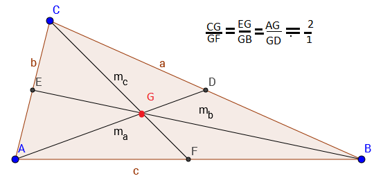

Медианите са отсечки в тръгълника с краища връх на триъгълника и среда на срещуположната страна на тръгълника.Медианата разделя страната на триъгълника на две равни части. Медианите се пресичат в една точка наречена медицентър. Медицентъра разделя медианите в отношение 2:1.  ma=1/2√(2c2+2b2-a2) mb=1/2√(2a2+2c2-b2) mc=1/2√(2a2+2b2-c2) В правоъгълен триъгълник(С=90 ·), mc е половината от хипотенузата т.е. (с/2)=R на описаната около триъгълника октъжност.